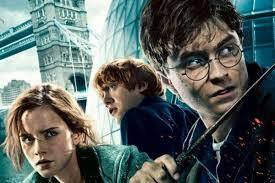

A notícia agora corre o mundo inteiro , surpreendendo todos os fãs desse univerço mágico.A série vai adaptar todos os 7 livros escritos por J.Krowling,tendo sua direção no projeto
.
Apesar da grande boa, nova os fãs da saga ficam em dúvida se realmente uma nova verão era realmente necessário,
contudo a alegrgria de muitros deixa todos edlvolvidos no projeto com grande expectativa
e uma boa perspectiva sobre o futuro dea saga, que recentemente ficou no auge com o jogo hogwarts legacy.
a duvida dos consumidores da saga é constante, quem vao ser os novos atores?como a história vai se desenrolar? isso so poderá ser descoberto com o tempo.
noticia, noticia harry potter sera rebootado na nova plataforma da warner
